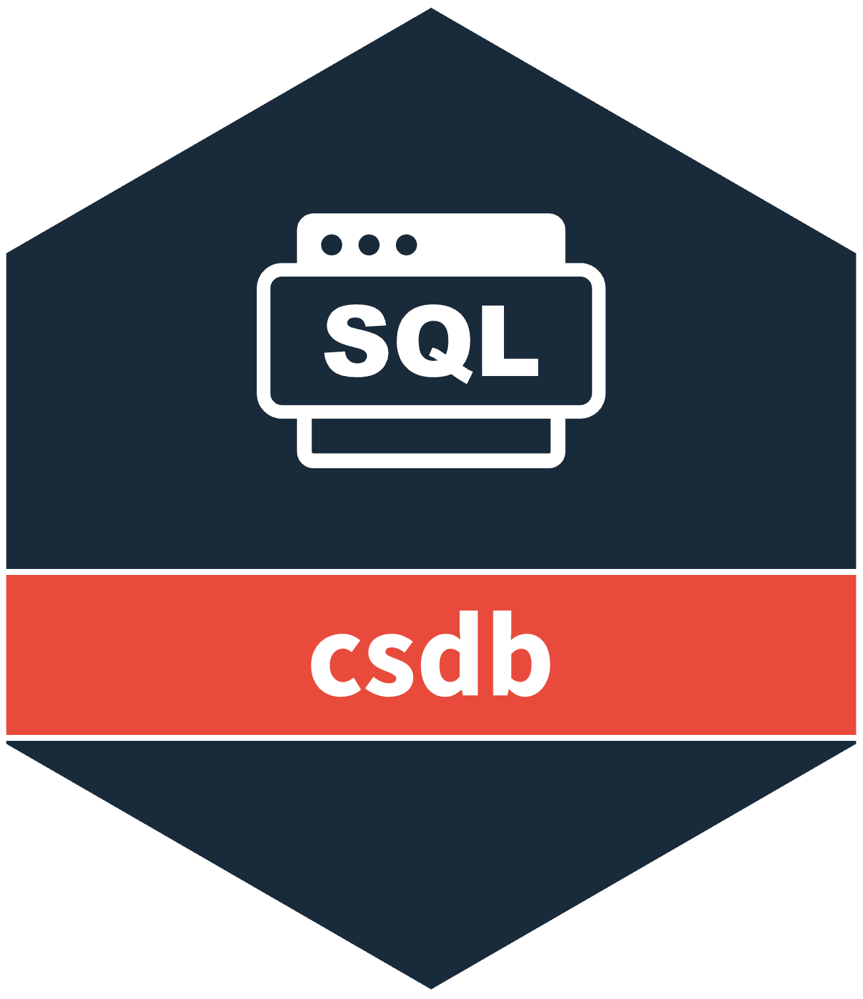

R6 Class representing a database connection
Source:R/r6_DBConnection_v9.R
DBConnection_v9.RdA robust database connection manager that handles connections to various database systems including Microsoft SQL Server and PostgreSQL. This class provides connection management, authentication, and automatic reconnection capabilities.
Details
The DBConnection_v9 class encapsulates database connection logic and provides a consistent interface for connecting to different database systems. It supports both trusted connections and user/password authentication, handles connection failures gracefully, and provides automatic reconnection functionality.
Key features:
Support for multiple database systems (SQL Server, PostgreSQL)
Automatic connection management with retry logic
Secure credential handling
Connection status monitoring
Graceful error handling and recovery
Active bindings
connectionDatabase connection.
autoconnectionDatabase connection that automatically connects if possible.
Methods
DBConnection_v9$new()
Create a new DBConnection_v9 object.
Usage
DBConnection_v9$new(
driver = NULL,
server = NULL,
port = NULL,
db = NULL,
schema = NULL,
user = NULL,
password = NULL,
trusted_connection = NULL,
sslmode = NULL,
role_create_table = NULL
)Examples
if (FALSE) { # \dontrun{
# Create a SQL Server connection
db_config <- DBConnection_v9$new(
driver = "ODBC Driver 17 for SQL Server",
server = "localhost",
port = 1433,
db = "mydb",
user = "myuser",
password = "mypass"
)
# Connect to the database
db_config$connect()
# Check connection status
db_config$is_connected()
# Use the connection
tables <- DBI::dbListTables(db_config$connection)
# Disconnect when done
db_config$disconnect()
# PostgreSQL example
pg_config <- DBConnection_v9$new(
driver = "PostgreSQL",
server = "localhost",
port = 5432,
db = "mydb",
user = "myuser",
password = "mypass"
)
pg_config$connect()
# ... use connection ...
pg_config$disconnect()
} # }